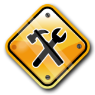
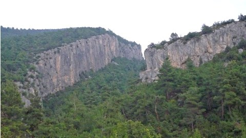
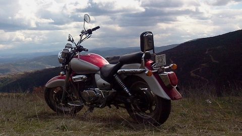

Buraya kadar geldiyseniz beni daha yakından tanımak istediğinizi varsayarak kendimi samimi bir şekilde tanıtmaya çalışacağım.
Yine de standart bir özgeçmiş arıyorsanız bağlantılar kısmına gözatmanız yeterli olacaktır.
Bağlantılar kısmında güncel özgeçmişim dışında, bana ait sosyal hesaplara ve takip ettiğim bazı sitelere de hızlıca ulaşabilirsiniz.
İlk öğrencilik yıllarım... Bizim zamanımızda 5 yıl idi ilk öğrenim. Aldığım eğitimden ziyade büyük bahçesinde oynadığımız oyunlar ve birkaç öğretmenim kaldı aklımda. Artık çok detaylı hatırlayamasam da aldığım eğitim beni Anadolu Lisesi sınavlarını kazandıracak kadar iyiymiş. Tüm öğretmenlerime saygılar.
Bilecik Anadolu Lisesi
90'lı yıllar ! Bir yılı ingilizce hazırlık, üç yılı orta okul ve üç yılı da lise olarak; yedi yıllık orta ve lise öğrenimimin geçtiği okul. Unutulmaz arkadaşlıkların yaşandığı ve halen devam eden sıkı dostlukların kurulduğu bu okulda da aldığımız eğitimin kalitesinin farkına sonradan, neredeyse hiç çalışmadan girdiğim sınavları kazandığım zaman, vardım. Fizik ve Kimya labaratuarında öğle arası deneyler yapmamıza izin veren hocalarımız, demokratik öğrenci kolu seçim propagandaları, turnuvalar, okul radyosu, yıl sonu gösterileri... Zamanının ötesinde bir okuldu sanki bizimki !
Ege Üniversitesi - Astronomi ve Uzay Bilimleri
Sene 1998, o zamanlar önce tercihler yapıp sonradan giriliyordu sınavlara; ÖSS, ÖYS. Büyük bir heyecan, ilk sıralara kazanamayacağımızı bilsek de yüksek puanlı okulları yazardık, ortalara ailemizin istediği okullar, en sona da kendi istediğimiz okullar... nasıl olsa kaç puan alacağımız belli değildi zaten :D Şansıma kendi istediğim okullardan biri olan Astronomi bölümüünü kazandım... Müthiş şeyler öğrendim derlerde ama dersler dışında da birçok klube katıldım okuduğum süre boyunca... Yamaç paraşütü, Fotoğrafçılık, Dağcılık...
Sakarya Üniversitesi - Bilgisayar Programlamcılığı
Askere gittim geldim... Astronomi bilene pek iş yok, 3dsMax öğrendik birkaç arkadaş mimari modelleme işleri yapıyoruz. Bilecik'de de üniversite yok o zamanlar ama internet var, uzaktan eğitim ile programcılık okuyayım bari biryandan dedim, 2 sene de sınavlarına gidiğ gelerek onu okudum. İstanbul'dan fuar standları yapan bir firmada modelleme işi çıktı, hazır oralardayken bir de "Ağ ve Sistem Uzmanlığı" kursuna gittim, bir süre sonra tekrar Bilecik'e döndüm, yeni yeteneklerime uygun bir iş bulup çalışmaya başladım... Bu arada şehrimizde bir AiKiDo okulu olduğunu öğrenip kayıt olduk hemen...
İstanbul Teknik Üniversitesi - Bilgisayar Mühendisliği
2 sene güzel güzel çalıştım. "Bu uzaktan eğitim güzel bir olanak, çalışırken biryandan da mühendisliğe tamamlasam ya..." diyerek dikey geçiş sınavlarına başvurdum, hazır başvurmuşken de 2-3 tane de iyi üniversite yazam başa dedim, eski alışkanlık işte... Yanlışlıkla yüksek puan alarak İTÜ'yü kazandım bu sefer de... Tekrar İstanbul yolları görünmüştü bana, yani şimdi gidip okumasam ayıp olurdu... İyi ki de gitmişim, yine müthiş şeyler öğrenmiştim ve ufkum değişmişti, AiKiDo'ya da devam edebilmiştim üstelik... Makine öğrenmesi, yaypay zeka, bilgisayar görüsü, doğal dil işleme... ben artık eski ben değildim ama dünya da değildi, pandemi başlamıştı...
Akdeniz Üniversitesi - Bilgisayar Mühendisliği - Yüksek Lisans
Eşimin Antalya'ya atanması ile İstanbul'dan kaçabildik ama pandemiden kaçamadık... İş yerleri kapalı, okullar uzaktan eğitimde yine...
Boş durmayayım okumaya devam edeyim dedim ve yüksek lisansa başladım. Bu sırada ilk gözağrım Astronimi alanında da öğrendiğim makine öğrenmesi yöntemlerini kullanmamı sağlayan
bir projeye davet edildim. Bitirme çalışmam sırasında ise Unity oyun motoru ile sentetik veri üretmem gerekti ve sanal dünyanın kapılarını da aralamış oldum bu vesile ile.
Üstelik bu yeni beceriler bana iş imkanı olarak da geri dönmüştü...
Akdeniz Üniversitesi - Bilgisayar Mühendisliği - Doktora
Hocalarımın da teşviki ile doktoraya da devam etmeye karar verdim. Bi süre makaleler, seminerler ve birkaç da VR - MR projesi ile boğuşmam gerekecek.
Tüm bu yaşananlar neticesinde akademik kariyer basamaklarını yarıladığımı farkettim. Fark edilmemesi mümkün olamayayn bir diğer şey de yapay zeka çalışmalarındaki inanılmaz hızlı gelişme ! İnsan düşünmeden edemiyor; acaba doktoramı bitirdiğimde bu becerilere hala ihtiyaç olacak mı ?
Yer aldığım projeler
Proje 1
Neler yaptık...
Proje 2
Neler ettik..
Çalıştığım işler
İş 1
Neler yaptık...
İş 2
Neler ettik..
Hobilerim
Müzik
Ruhumuzun gıdası müziği kim sevmez ki? Çocukluğumda plaklarla, kasetlerle ve radyo ile başlayan müzik yolculuğuma yıllar içinde edindiğim enstrümalar ile devam ediyorum... Devamı...
Aikido
O-Sensei'nin kadim savaş sanatlarından öğrendikleri ile geliştirdiği Aikido, bizleri evrenin enerjisiyle uyumun yollarını aradığımız sonu gelmeyen bir yolculuğa çıkarıyor... Devamı...
Dağcılık
Dağlık bir coğrafyada büyüdüğümden olsa gerek, doğada ve dağlarda olduğum zamanlar özgürlük hissini en çok yaşadığım anlardır hep ve dağ deyince de aklıma ilk Aladağlar gelir... Devamı...
Astronomi
Uzay, son sınır! Bunlar benim astronomi maceralarım. Ömürboyu sürecek bir keşfetme arzusu ve çok uzaklarda gelen o zayıf ışıkları anlamlandırma çabası... Devamı...
PC Oyunları
Her ne kadar doğa insanı olsam da, her zaman şehirden kaçma fırsatı bulamıyorum ve evde eğlence denilince bilgisayar oyunları benim için üst sıralarda olan bir seçenek... Devamı...
Chopper
Motorsiklet kullanmak pek çoğumuzun hayalidir muhtemelen, ve benim tercihim de chopper-cruiser motorlar. Sanırım izlediğim filmlerden biraz fazla etkilenmişim... Devamı...
Devamı...
Ruhumuzun gıdası müziği kim sevmez ki? Çocukluğumda plaklarla, kasetlerle ve radyo ile başlayan müzik yolculuğuma yıllar içinde edindiğim enstrümalar ile devam ediyorum...
Müzik
~ 2013 . 01 ~

Makale buraya yazılacak...
Aikido
Devamı...
O-Sensei'nin kadim savaş sanatlarından öğrendikleri ile geliştirdiği Aikido, bizleri evrenin enerjisiyle uyumun yollarını aradığımız sonu gelmeyen bir yolculuğa çıkarıyor...
Bilecik Dojo
~ 2013 . 10 ~
Makale buraya yazılacak...
Dağcılık
Devamı...
2000 yılında DODAK ile başlayan bu macera adeta benim için bir yaşam biçimi... Klüp eğitimlerini tamamlayıp bir süre eğitmenliğini de yaptıktan sonra Türkiye Dağcılık Federasyonu eğitimlerine de katıldım...
Şimdiye kadar içlerinde Ağrı, Erciyes, Hasan, Kızlarsivrisi ve Aladağlar'da birçok zirvenin de bulunduğu yaz ve kış faaliyetlerinde bulundum, birkaç uzun-duvar denemesi ile birlikte çeşitli bölgelerde onlarca spor ve alpin-spor tırmanışlar gerçekleştirdim.
Fırsat buldukça da dağlara kaçıyorum, Aladağlar'a...
Gölpazarı keşif
~ 2013 . 05 ~

Gölpazarı - Söğütcük köyü yakınlarındaki yeni ve gözde tırmanış bahçesine bir keşif gezisi gerçekleştirdik...
Amacımız hem bölgeye ve rotalara ulaşım ile kamp için uygun yerleri belirleyerek bir sonraki gelişimizde sıkıntı çekmemek hem de kapalı bir günü keyifli bir keşifle değerlendirmekti.
Neyse ki Doğan Palut'un "Batı Türkiye Kaya Tırmanış Rehberi" isimli kitabını yanımıza almışdık, çok da iyi etmişiz... Kitaptaki harita ve ulaşım bilgileri ile elimizle koymuş gibi bulduk vadinin içindeki gizli bahçeyi...
Yalnız aklınızda olsun; ilk gidişiniz ise aracınızda yeteri kadar yakıt bulundurun çünki bazı yol ayrımlarında ve köylerde tabela yok... Tabi fazladan bir maceraya hayır demezseniz o başka ;)
Astronomi
Devamı...
Ege Üniversitesi Astronomi ve Uzay Bilimleri Bölümünü kazanmam ile 1998 yılında akademik bir düzeye ulaşan bu merakım, yıllar içinde ATM olarak kendine yeni bir yön verdi...
Okulun ilk yıllarında, henüz bilimsel gözlemlere çıkmazken, gökyüzünü tanımak ve bir yandan da gözlem disiplinine alışmak için kullandığımız A-10 teleskobubun tadı bir başkaydı. Günbatımında güneş lekeleriyle başlayan ısınma gözlemlerini,
hocalarımızla birlikte hazırladığımız keyifli bir akşam yemeği izlerdi. Hava kararıncaya kadarki kısa bir dinlenmenin ardından hocalarımız bilimsel gözlemleri gerçekleştirmek üzere A-40 teleskobuna yol alırken bizler de kısa bir yürütüş mesafesinde olan A-10 öğrenci teleskopunun,
nam-ı diğer "Sürgülü damın" yolunu tutar, sabahın ilk ışıklarına kadar yıldızların ve diğer gökcisimlerinin tadını çıkarırdık...
Ayna yapımı
~ 2013 . 04 ~
Amatör teleskop yapımı projemin ilk basamağını oluşturan ayna yapımına, aldığım 200 mm çapında ve 18 mm kalınlığındaki soda-kireç camı ile, resmen başlamış bulunuyorum!
Kenarları rodajsız olduğu için elde rodajlama ile işe koyuldum ve birkaç saatlik keyifli bir çalışma ile istediğim şekli aldı kenarlar... Şekil verme işlemi oldukça uzun bir uğraş olduğu için aşındırma işlemlerine henüz başlayamadım.
Sanırım birkaç ay daha paşlayamayacağım bu yüzden, umarım yaz ortasına doğru vakit bulabilirim...
Bilgisayar Oyunları
Devamı...
Her ne kadar kendimi doğa insanı olarak görsem de şehirlerde geçiyor vaktimin büyük bölümü ve şehirde eğlence denilince bilgisayar oyunları benim için bir numaralı seçenek.
Zamanında karakutular ile ve çakma nintendolar ile ne eğlenirdik, atari solonları evimize gelmişti adeta. Tabi ozamanlar Win95 yeni çıkıyordu daha...
Kısa süre sonra da FPS Simülasyon ve Strateji oyunları sardı ortalığı, ha bir de sonradan alışıp bırakamadığım RPG oyunları. İşte bu aralar oynadığım oyunlar...
Diablo II
~ 2013 . 01 ~
Zamanında nedense oynayamadığım bu oyunu yeni formatladığım bilgisayarıma kurdum... Ohoooo, biz Diablo III'ü bile bitirdik diyenler olabilir aranızda ama benim için oynanmamış her oyun yenidir :p
Şu anda Level 34 Sorceres'im ve tahmin ettiğiniz üzere şuanda "Lord of Destruction" eklentisini oynuyorum, oyun esas şimdi keyiflendi ama kısa sürecek olması biraz da canımı sıkıyor doğrusu.
Dioblo II'yi bitirdikten sonra sanırım Diablo III'e başlayacağım vakit kaybetmeden :)
Chopper
Devamı...
Yıllardır beğendiğimiz motoru sonunda aldık... Hyosung GV250 Aquila, 250cc V-Twin motoru ile 29hp güç üretebiliyor. Artık kasklarımızı taktık mı dilediğimiz yere götürecek bizi.
Şimdilik 1-2 saatlik mesafelere haftasonları kamplı gitmeyi planlıyorum, havalar biraz daha düzelsin de. İleride ise yurtiçi turlara çıkma hayalim var, güzel yurdum beni çağırıyor...
Aquila...
~ 2013 . 03 ~

2013 yılı Mart ayı başında aldığımız motoru, eski sahibi Buğra kapıya kadar getirip teslim etmişti, biz de güzel bir Pazar kahvaltısı ile teşekkür etmiştik kendisine.
Sonraki hafta da Eskişehir'deki Hyosung servisi Arif Emiroğlu'ndan kasklarımız ile birlikte bir çift de dizlik aldık.
İnternetten siparişini verdiğim temizlik ve bakım malzemeleri de o hafta içinde elime ulaştı. İlk güneşli günde motorumu temizleyip onu bir güzel şımarttım :)